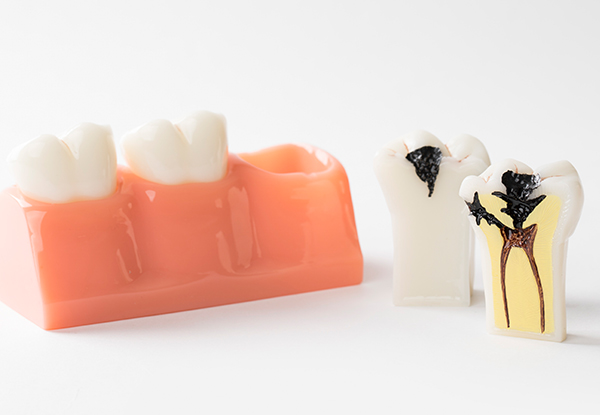
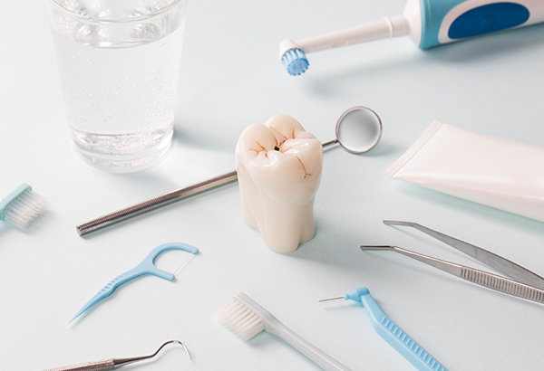
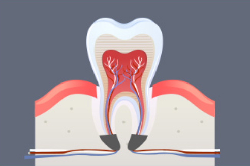
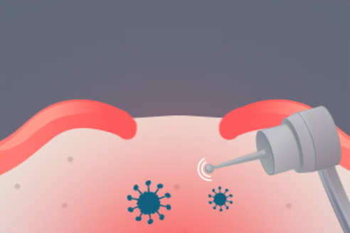
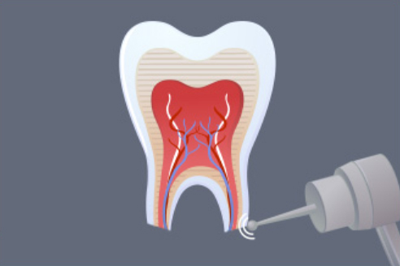
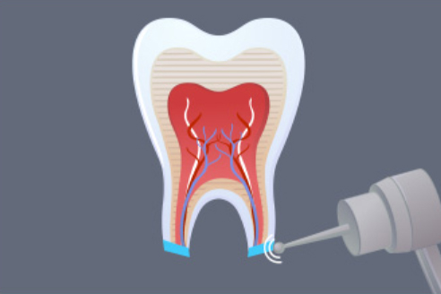
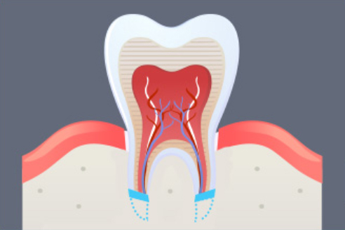
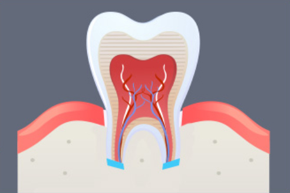
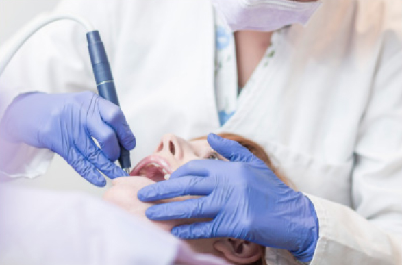
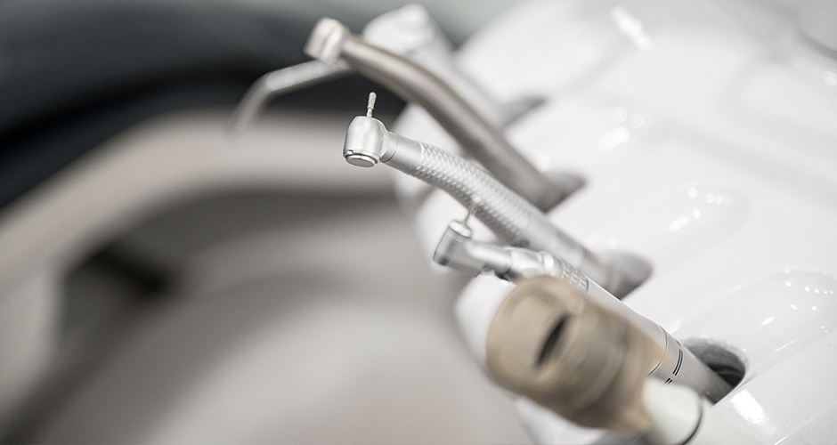

1단계
병든 치아를
살리기 위하여 발치함
<%=m_client_en%>
치아 재식술은 치아를 잠시 뽑아서 구강외에서 치료 후
다시 재위치 시키는 술식으로 발치 과정만 문제 없다면 매우 안전한 치료입니다.
신경치료를 잘못 받았거나 심한 충치와 치주질환으로 치아 뿌리끝까지
염증이 내려온 경우 심한 통증은 물론 치아 뿌리가 닿아있는 잇몸뼈 부분까지 염증이 퍼질 수 있습니다.
보통 이런 경우 치아를 발치하고 임플란트를 식립하지만
<%=m_client_name%>는
병든 치아를 발치해 뿌리 쪽 염증을 제거하여 치료하고 발치한 곳의 잇몸 속 염증도 제거한 후 발치한 치아를 다시 심는 치아재식술을 합니다.

치아가 몹시
욱신거리는
경우
신경치료를
받았는데도
통증이 심한 경우
신경관을 찾지
못해 신경치료를
제대로 못 받은
경우
치아 속 신경이
죽고 통증, 염증이
심한 경우


병든 치아를
살리기 위하여 발치함

치아를 뽑은 자리 잇몸뼈 부분의
염증을 제거 치료합니다

병든 치아 뿌리쪽
병소부분을 제거합니다

세균들이 뿌리 끝으로 나오지 않게 인체 친화적인
치과치료용 충전재료로 봉합니다

제거된 치아 뿌리 쪽 잇몸뼈가
서서히 치유됩니다

염증이 없어지고
잇몸뼈가 치유됩니다

염증이 심한 치아뿌리 끝부분과 치아뿌리 끝에 닿아 있는 치조골 주위
염증조직을
함께 제거하는 것을 치근단 수술이라 합니다.

세균 감염으로
치아 뿌리 끝에
염증이 심한 경우
일반적인 재신경치료로
통증이 나아지지
않는 경우
치아성형을 비롯해
과거 보철치료를 받은 치아의
뿌리까지
상한 경우
치아의 신경이
막혀 있어서 치료가
불가능한 경우
과거 치료로 인해
치아에
기둥이 있어
재신경 치료를
하기
어려운 경우
치아뿌리쪽(치근단) 염증을 살핀 후
잇몸을 절개해
치아뿌리와 치조골부위의
염증과 병소를 제거합니다
치아뿌리와 치조골 부위가
말끔히 제거된 것을
확인합니다
치아뿌리에 인체친화적
치과용 충전물을 넣고 막아
세균감염을 예방합니다
치조골이 부족하면 골이식재로
충전하고
절개한 잇몸을
봉합해 치료를 완료합니다
대형 병원이 아니면
운영이 어려운
치료 가능
자연치아를 살리는
다양한 치료와
시너지 효과
의료진의
풍부한 경험을 통한
맞춤 진료
고난이도 수술을
안전하고
정밀하게 진행